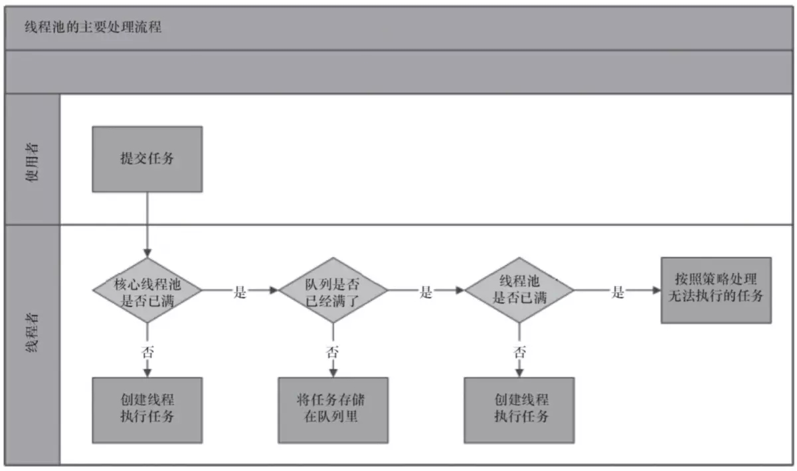
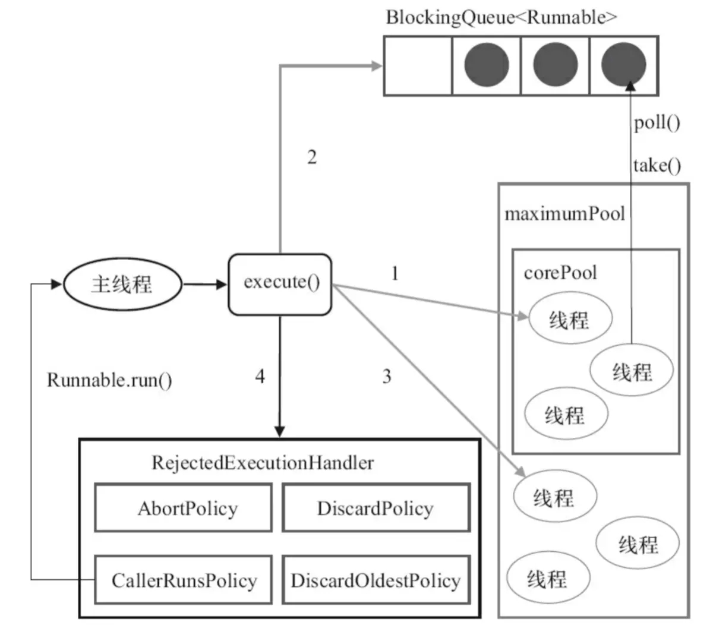

前言
在 Java 中，我们可以利用多线程来最大化地压榨 CPU 多核计算的能力。但是，线程本身是把双刃剑，我们需要知道它的利弊，才能在实际系统中游刃有余地运用。
在进入主题之前，我们先了解一下线程池的基本概念。
线程池，本质上是一种对象池，用于管理线程资源。
在任务执行前，需要从线程池中拿出线程来执行。
在任务执行完成之后，需要把线程放回线程池。
通过线程的这种反复利用机制，可以有效地避免直接创建线程所带来的坏处。
我们先来看看线程池带来了哪些好处。
- 降低资源的消耗。线程本身是一种资源，创建和销毁线程会有CPU开销；创建的线程也会占用一定的内存。
- 提高任务执行的响应速度。任务执行时，可以不必等到线程创建完之后再执行。
- 提高线程的可管理性。线程不能无限制地创建，需要进行统一的分配、调优和监控。
接下来，我们看看不使用线程池有哪些坏处。
- 频繁的线程创建和销毁会占用更多的CPU和内存
- 频繁的线程创建和销毁会对GC产生比较大的压力
- 线程太多，线程切换带来的开销将不可忽视
- 线程太少，多核CPU得不到充分利用，是一种浪费
因此，我们有必要对线程池进行比较完整地说明，以便能对线程池进行正确地治理。
线程池实现原理

通过上图，我们看到了线程池的主要处理流程。我们的关注点在于，任务提交之后是怎么执行的。大致如下：
- 判断核心线程池是否已满，如果不是，则创建线程执行任务。
- 如果核心线程池满了，判断队列是否满了，如果队列没满，将任务放在队列中。
- 如果队列满了，则判断线程池是否已满，如果没满，创建线程执行任务。
- 如果线程池也满了，则按照拒绝策略对任务进行处理。
在 JDK 里面，我们可以将处理流程描述得更清楚一点。来看看 ThreadPoolExecutor 的处理流程。

线程池使用方式
java.util.concurrent 包中提供了多种线程池的创建方式，我们可以直接使用 ThreadPoolExecutor 类直接创建一个线程池，也可以使用 Executors 类创建，下面我们分别说一下这几种创建的方式。
Executors 创建线程池
Executors 是一个线程池工厂，提供了很多的工厂方法，我们来看看它大概能创建哪些线程池。1
2
3
4
5
6
7
8
9
10// 创建单一线程的线程池
public static ExecutorService newSingleThreadExecutor();
// 创建固定数量的线程池
public static ExecutorService newFixedThreadPool(int nThreads);
// 创建带缓存的线程池
public static ExecutorService newCachedThreadPool();
// 创建定时调度的线程池
public static ScheduledExecutorService newScheduledThreadPool(int corePoolSize);
// 创建流式（fork-join）线程池
public static ExecutorService newWorkStealingPool();
1. 创建单一线程的线程池
顾名思义，这个线程池只有一个线程。若多个任务被提交到此线程池，那么会被缓存到队列（队列长度为 Integer.MAX_VALUE）。当线程空闲的时候，按照 FIFO 的方式进行处理。
2. 创建固定数量的线程池
和 创建单一线程的线程池 类似，只是这儿可以并行处理任务的线程数更多一些罢了。若多个任务被提交到此线程池，会有下面的处理过程。
- 如果线程的数量未达到指定数量，则创建线程来执行任务
- 如果线程池的数量达到了指定数量，并且有线程是空闲的，则取出空闲线程执行任务
- 如果没有线程是空闲的，则将任务缓存到队列（队列长度为
Integer.MAX_VALUE）。当线程空闲的时候，按照 FIFO 的方式进行处理
3. 创建带缓存的线程池
这种方式创建的线程池，核心线程池的长度为0，线程池最大长度为 Integer.MAX_VALUE。由于本身使用 SynchronousQueue 作为等待队列的缘故，导致往队列里面每插入一个元素，必须等待另一个线程从这个队列删除一个元素。
4. 创建定时调度的线程池
和上面3个工厂方法返回的线程池类型有所不同，它返回的是 ScheduledThreadPoolExecutor 类型的线程池。平时我们实现定时调度功能的时候，可能更多的是使用第三方类库，比如：quartz等。但是对于更底层的功能，我们仍然需要了解。
5. 创建工作窃取线程池
WorkStealingPool（工作窃取）类型的线程池，适合使用在很耗时的操作，但是 WorkStealingPool 不是 ThreadPoolExecutor 的扩展。它是新的线程池类 ForkJoinPool 的扩展（也就是说它的底层实现是 ForkJoinPool），但是都是在统一的一个 Executors 类中实现。由于能够合理的使用 CPU 进行对任务操作（并行操作），所以适合使用在很耗时的任务中。
newSingleThreadExecutor
创建一个单线程的线程池，以无界队列方式来运行该线程。当多个任务提交到单线程线程池中，线程池将逐个去进行执行，未执行的任务将放入无界队列进行等待。1
2
3
4
5
6
7
8/**
* 创建单线程的线程池
*/
public static void createSingleThreadPool() {
ExecutorService singleThreadPool = Executors.newSingleThreadExecutor();
singleThreadPool.execute(()-> System.out.println(Thread.currentThread().getName()));
}
执行结果：1
pool-1-thread-1
newFixedThreadPool
创建一个可重用固定线程数的线程池，以共享的无界队列方式来运行这些线程。在任意点，在大多数 nThreads 线程会处于处理任务的活动状态。如果在所有线程处于活动状态时提交附加任务，则在有可用线程之前，附加任务将在队列中等待。1
2
3
4
5
6
7
8
9
10
11
12
13
14
15
16
17
18
19
20
21/**
* 创建固定大小的线程池
*/
public static void createFixedThreadPool() {
ExecutorService fixedThreadPool = Executors.newFixedThreadPool(5);
final CountDownLatch countDownLatch = new CountDownLatch(5);
for (int i = 0; i < 5; i++) {
final int currentIndex = i;
fixedThreadPool.execute(() -> {
System.out.println(Thread.currentThread().getName() + ", currentIndex is : " + currentIndex);
countDownLatch.countDown();
});
}
try {
countDownLatch.await();
} catch (InterruptedException e) {
e.printStackTrace();
}
System.out.println("全部线程执行完毕");
}
执行结果：1
2
3
4
5
6pool-1-thread-4, currentIndex is : 3
pool-1-thread-5, currentIndex is : 4
pool-1-thread-2, currentIndex is : 1
pool-1-thread-1, currentIndex is : 0
pool-1-thread-3, currentIndex is : 2
全部线程执行完毕
newCachedThreadPool
创建一个可缓存的无界线程池，该方法无参数。当线程池中的线程空闲时间超过60s则会自动回收该线程，当任务超过线程池的线程数则创建新线程。线程池的大小上限为 Integer.MAX_VALUE，可看做是无限大。
1 | /** |
执行结果：1
2
3
4
5
6
7
8
9
10
11pool-1-thread-1, currentIndex is : 0
pool-1-thread-5, currentIndex is : 4
pool-1-thread-4, currentIndex is : 3
pool-1-thread-3, currentIndex is : 2
pool-1-thread-2, currentIndex is : 1
pool-1-thread-9, currentIndex is : 8
pool-1-thread-8, currentIndex is : 7
pool-1-thread-7, currentIndex is : 6
pool-1-thread-6, currentIndex is : 5
pool-1-thread-5, currentIndex is : 9
全部线程执行完毕
newScheduledThreadPool
创建一个线程池，它可安排在给定延迟后运行命令或者定期地执行。1
2
3
4
5
6
7
8
9
10
11
12
13
14
15
16
17
18/**
* 创建给定延迟后运行命令或者定期地执行的线程池
*/
public static void createScheduledThreadPool() {
ScheduledExecutorService scheduledThreadPool = Executors.newScheduledThreadPool(5);
final CountDownLatch countDownLatch = new CountDownLatch(5);
for (int i = 0; i < 5; i++) {
final int currentIndex = i;
//定时执行一次的任务，延迟1s后执行
scheduledThreadPool.schedule(() -> {
System.out.println(Thread.currentThread().getName() + ", currentIndex is : " + currentIndex);
countDownLatch.countDown();
}, 1, TimeUnit.SECONDS);
//周期性地执行任务，延迟2s后，每3s一次地周期性执行任务
scheduledThreadPool.scheduleAtFixedRate(() -> System.out.println(Thread.currentThread().getName() + "every 3s"), 2, 3, TimeUnit.SECONDS);
}
}
这里创建了一个调度的线程池，执行两个任务，第一个任务延迟1秒后执行，第二个任务为周期性任务，延迟2秒后，每三秒执行一次。
执行结果：1
2
3
4
5
6
7
8
9
10
11
12
13
14
15pool-1-thread-1, currentIndex is : 0
pool-1-thread-2, currentIndex is : 1
pool-1-thread-3, currentIndex is : 2
pool-1-thread-2, currentIndex is : 3
pool-1-thread-4, currentIndex is : 4
pool-1-thread-5every 3s
pool-1-thread-2every 3s
pool-1-thread-3every 3s
pool-1-thread-1every 3s
pool-1-thread-5every 3s
pool-1-thread-2every 3s
pool-1-thread-4every 3s
pool-1-thread-4every 3s
pool-1-thread-3every 3s
pool-1-thread-2every 3s
可以看到，第一个任务执行完毕后，开始执行定时调度型任务
该线程池提供了多个方法：
schedule(Runnable command, long delay, TimeUnit unit)，延迟一定时间后执行 Runnable 任务；schedule(Callable callable, long delay, TimeUnit unit)，延迟一定时间后执行 Callable 任务；scheduleAtFixedRate(Runnable command, long initialDelay, long period, TimeUnit unit)，延迟一定时间后，以间隔 period 时间的频率周期性地执行任务；scheduleWithFixedDelay(Runnable command, long initialDelay, long delay,TimeUnit unit)，与scheduleAtFixedRate()方法很类似，但是不同的是scheduleWithFixedDelay()方法的周期时间间隔是以上一个任务执行结束到下一个任务开始执行的间隔，而scheduleAtFixedRate()方法的周期时间间隔是以上一个任务开始执行到下一个任务开始执行的间隔，也就是这一些任务系列的触发时间都是可预知的。
四种线程池对比
| 线程池方法 | 初始化线程池数 | 最大线程池数 | 线程池中线程存活时间 | 时间单位 | 工作队列 |
|---|---|---|---|---|---|
| newCachedThreadPool | 0 | Integer.MAX_VALUE | 60 | 秒 | SynchronousQueue |
| newFixedThreadPool | 入参指定大小 | 入参指定大小 | 0 | 毫秒 | LinkedBlockingQueue |
| newScheduledThreadPool | 入参指定大小 | Integer.MAX_VALUE | 0 | 微秒 | DelayedWorkQueue |
| newSingleThreadExecutor | 1 | 1 | 0 | 毫秒 | LinkedBlockingQueue |
ThreadPoolExecutor 创建线程池
上面，我们是通过 Executors 来创建线程池，其提供4个静态工厂方法：newCachedThreadPool()、newFixedThreadPool(int)、newSingleThreadExecutor和newScheduledThreadPool(int)，种方式非常简单。但正是因为简单，所以限制了线程池的功能。比如：无长度限制的队列，可能因为任务堆积导致 OOM，这是非常严重的 bug，应尽可能地避免。怎么避免？归根结底，还是需要我们通过更底层的方式来创建线程池。
这些方法最终都是通过 ThreadPoolExecutor 类来完成的，当有一些场景需要更细粒度的控制的线程池，我们就可以使用 ThreadPoolExecutor 方法创建线程池。
它提供了好几个构造方法，但是最底层的构造方法却只有一个。那么，我们就从这个构造方法着手分析。1
2
3
4
5
6
7public ThreadPoolExecutor(int corePoolSize,
int maximumPoolSize,
long keepAliveTime,
TimeUnit unit,
BlockingQueue<Runnable> workQueue,
ThreadFactory threadFactory,
RejectedExecutionHandler handler);
这个构造方法有7个参数，各个参数含义：
corePoolSize：池中所保存的线程数，包括空闲线程，必须大于或等于0。maximumPoolSize：池中允许的最大线程数，必须大于或等于corePoolSize。keepAliveTime：线程存活时间，当线程数大于核心时，此为终止前多余的空闲线程等待新任务的最长时间。unit：参数的时间单位，必须大于或等于0。workQueue：等待队列，线程池中的线程数超过核心线程数时，任务将放在等待队列，它是一个BlockingQueue类型的对象。threadFactory:执行程序创建新线程时使用的工厂，默认为DefaultThreadFactory类。handler:拒绝策略，由于超出线程范围和队列容量而使执行被阻塞时所使用的处理程序，默认策略为ThreadPoolExecutor.AbortPolicy。
各个参数详细解释：
corePoolSize（线程池基本大小）：当向线程池提交一个任务时，若线程池已创建的线程数小于corePoolSize，即便此时存在空闲线程，也会通过创建一个新线程来执行该任务，直到已创建的线程数大于或等于corePoolSize时，才会根据是否存在空闲线程，来决定是否需要创建新的线程。除了利用提交新任务来创建和启动线程（按需构造），也可以通过prestartCoreThread()或prestartAllCoreThreads()方法来提前启动线程池中的基本线程。maximumPoolSize（线程池最大大小）：线程池所允许的最大线程个数。当队列满了，且已创建的线程数小于maximumPoolSize，则线程池会创建新的线程来执行任务。另外，对于无界队列，可忽略该参数。keepAliveTime（线程存活保持时间）：默认情况下，当线程池的线程个数多于corePoolSize时，线程的空闲时间超过keepAliveTime则会终止。但只要keepAliveTime大于0，allowCoreThreadTimeOut(boolean)方法也可将此超时策略应用于核心线程。另外，也可以使用setKeepAliveTime()动态地更改参数。unit（存活时间的单位）：时间单位，分为7类，从细到粗顺序：NANOSECONDS（纳秒），MICROSECONDS（微妙），MILLISECONDS（毫秒），SECONDS（秒），MINUTES（分），HOURS（小时），DAYS（天）。workQueue（任务队列）：用于传输和保存等待执行任务的阻塞队列。可以使用此队列与线程池进行交互：- 如果运行的线程数少于
corePoolSize，则Executor始终首选添加新的线程，而不进行排队。 - 如果运行的线程数等于或多于
corePoolSize，则Executor始终首选将请求加入队列，而不添加新的线程。 - 如果无法将请求加入队列，则创建新的线程，除非创建此线程超出
maximumPoolSize，在这种情况下，任务将被拒绝。
- 如果运行的线程数少于
threadFactory（线程工厂）：用于创建新线程。由同一个threadFactory创建的线程，属于同一个ThreadGroup，创建的线程优先级都为Thread.NORM_PRIORITY，以及是非守护进程状态。threadFactory创建的线程也是采用new Thread()方式，threadFactory创建的线程名都具有统一的风格：pool-m-thread-n（m为线程池的编号，n为线程池内的线程编号）。handler（线程饱和策略）：当线程池和队列都满了，则表明该线程池已达饱和状态。ThreadPoolExecutor.AbortPolicy：处理程序遭到拒绝，则直接抛出运行时异常RejectedExecutionException。(默认策略)ThreadPoolExecutor.CallerRunsPolicy：调用者所在线程来运行该任务，此策略提供简单的反馈控制机制，能够减缓新任务的提交速度。ThreadPoolExecutor.DiscardPolicy：无法执行的任务将被删除。ThreadPoolExecutor.DiscardOldestPolicy：如果执行程序尚未关闭，则位于工作队列头部的任务将被删除，然后重新尝试执行任务（如果再次失败，则重复此过程）。
工作队列排队策略（workQueue）
- 直接提交：工作队列的默认选项是
SynchronousQueue，它将任务直接提交给线程而不保持它们。在此，如果不存在可用于立即运行任务的线程，则试图把任务加入队列将失败，因此会构造一个新的线程。此策略可以避免在处理可能具有内部依赖性的请求集时出现锁。直接提交通常要求无界maximumPoolSizes以避免拒绝新提交的任务。当命令以超过队列所能处理的平均数连续到达时，此策略允许无界线程具有增长的可能性。 - 无界队列：使用无界队列（例如，不具有预定义容量的
LinkedBlockingQueue）将导致在所有corePoolSize线程都忙时新任务在队列中等待。这样，创建的线程就不会超过corePoolSize。（因此，maximumPoolSize的值也就无效了。）当每个任务完全独立于其他任务，即任务执行互不影响时，适合于使用无界队列；例如，在 Web 页服务器中。这种排队可用于处理瞬态突发请求，当命令以超过队列所能处理的平均数连续到达时，此策略允许无界线程具有增长的可能性。 - 有界队列：当使用有限的
maximumPoolSizes时，有界队列（如ArrayBlockingQueue）有助于防止资源耗尽，但是可能较难调整和控制。队列大小和最大池大小可能需要相互折衷：使用大型队列和小型池可以最大限度地降低 CPU 使用率、操作系统资源和上下文切换开销，但是可能导致人工降低吞吐量。如果任务频繁阻塞（例如，如果它们是 I/O 边界），则系统可能为超过您许可的更多线程安排时间。使用小型队列通常要求较大的池大小，CPU 使用率较高，但是可能遇到不可接受的调度开销，这样也会降低吞吐量。
工作队列对比
BlockingQueue 的插入、移除、检查这些方法，对于不能立即满足但可能在将来某一时刻可以满足的操作，共有4种不同的处理方式：第一种是抛出一个异常，第二种是返回一个特殊值（null 或 false，具体取决于操作），第三种是在操作可以成功前，无限期地阻塞当前线程，第四种是在放弃前只在给定的最大时间限制内阻塞。如下表格：
| 操作 | 抛出异常 | 特殊值 | 阻塞 | 超时 |
|---|---|---|---|---|
| 插入 | add(e) | offer(e) | put(e) | offer(e, time, unit) |
| 移除 | remove() | poll() | take() | poll(time, unit) |
| 检查 | element() | peek() | 不可用 | 不可用 |
实现 BlockingQueue 接口的常见类如下：
ArrayBlockingQueue：基于数组的有界阻塞队列。队列按 FIFO 原则对元素进行排序，队列头部是在队列中存活时间最长的元素，队尾则是存在时间最短的元素。新元素插入到队列的尾部，队列获取操作则是从队列头部开始获得元素。 这是一个典型的“有界缓存区”，固定大小的数组在其中保持生产者插入的元素和使用者提取的元素。一旦创建了这样的缓存区，就不能再增加其容量。试图向已满队列中放入元素会导致操作受阻塞；试图从空队列中提取元素将导致类似阻塞。ArrayBlockingQueue构造方法可通过设置fairness参数来选择是否采用公平策略，公平性通常会降低吞吐量，但也减少了可变性和避免了“不平衡性”，可根据情况来决策。LinkedBlockingQueue：基于链表的无界阻塞队列。与ArrayBlockingQueue一样采用 FIFO 原则对元素进行排序。基于链表的队列吞吐量通常要高于基于数组的队列。SynchronousQueue：同步的阻塞队列。其中每个插入操作必须等待另一个线程的对应移除操作，等待过程一直处于阻塞状态，同理，每一个移除操作必须等到另一个线程的对应插入操作。SynchronousQueue没有任何容量。不能在同步队列上进行peek，因为仅在试图要移除元素时，该元素才存在；除非另一个线程试图移除某个元素，否则也不能（使用任何方法）插入元素；也不能迭代队列，因为其中没有元素可用于迭代。Executors.newCachedThreadPool使用了该队列。PriorityBlockingQueue：基于优先级的无界阻塞队列。优先级队列的元素按照其自然顺序进行排序，或者根据构造队列时提供的Comparator进行排序，具体取决于所使用的构造方法。优先级队列不允许使用null元素。依靠自然顺序的优先级队列还不允许插入不可比较的对象（这样做可能导致ClassCastException）。虽然此队列逻辑上是无界的，但是资源被耗尽时试图执行add操作也将失败（导致OutOfMemoryError）。
线程工厂（threadFactory）
ThreadFactory 是一个接口，只有一个方法。既然是线程工厂，那么我们就可以用它生产一个线程对象。来看看这个接口的定义。1
2
3
4
5
6
7
8
9
10
11public interface ThreadFactory {
/**
* Constructs a new { Thread}. Implementations may also initialize
* priority, name, daemon status, { ThreadGroup}, etc.
*
* r a runnable to be executed by new thread instance
* constructed thread, or { null} if the request to
* create a thread is rejected
*/
Thread newThread(Runnable r);
}
Executors 的实现使用了默认的线程工厂 DefaultThreadFactory。它的实现主要用于创建一个线程，线程的名字为 pool-{poolNum}-thread-{threadNum}。1
2
3
4
5
6
7
8
9
10
11
12
13
14
15
16
17
18
19
20
21
22
23
24
25
26static class DefaultThreadFactory implements ThreadFactory {
private static final AtomicInteger poolNumber = new AtomicInteger(1);
private final ThreadGroup group;
private final AtomicInteger threadNumber = new AtomicInteger(1);
private final String namePrefix;
DefaultThreadFactory() {
SecurityManager s = System.getSecurityManager();
group = (s != null) ? s.getThreadGroup() :
Thread.currentThread().getThreadGroup();
namePrefix = "pool-" +
poolNumber.getAndIncrement() +
"-thread-";
}
public Thread newThread(Runnable r) {
Thread t = new Thread(group, r,
namePrefix + threadNumber.getAndIncrement(),
0);
if (t.isDaemon())
t.setDaemon(false);
if (t.getPriority() != Thread.NORM_PRIORITY)
t.setPriority(Thread.NORM_PRIORITY);
return t;
}
}
线程池关闭
调用线程池的 shutdown() 或 shutdownNow() 方法来关闭线程池。
shutdown：按过去执行已提交任务的顺序发起一个有序的关闭，但是不接受新任务。如果已经关闭，则调用没有其他作用。shutdownNow：尝试停止所有的活动执行任务、暂停等待任务的处理，并返回等待执行的任务列表。在从此方法返回的任务队列中排空（移除）这些任务。
中断采用 interrupt 方法，所以无法响应中断的任务可能永远无法终止。但调用上述的两个关闭之一，isShutdown() 方法返回值为 true，当所有任务都已关闭，表示线程池关闭完成，则 isTerminated() 方法返回值为 true。当需要立刻中断所有的线程，不一定需要执行完任务，可直接调用 shutdownNow() 方法。
线程池大小设置
如何合理地估算线程池大小，这个问题是比较复杂的，比较粗糙的估算方式：（N 为 CPU 个数）
- 如果是 CPU 密集型应用，则线程池大小设置为 N+1
- 如果是 IO 密集型应用，则线程池大小设置为 2N+1
PS：我们可以通过 Runtime.getRuntime().availableProcessors() 来获取 CPU 的个数。
但是根据实际应用场景的情况来看，这种估算有时并不准确，这里不展开讨论线程池大小的设置，可以看一下这一篇文章的分析：如何合理地估算线程池大小
线程池的状态监控
利用线程池提供的参数进行监控，参数如下：
getTaskCount：返回曾计划执行的近似任务总数。因为在计算期间任务和线程的状态可能动态改变，所以返回值只是一个近似值。getCompletedTaskCount：返回已完成执行的近似任务总数。因为在计算期间任务和线程的状态可能动态改变，所以返回值只是一个近似值，但是该值在整个连续调用过程中不会减少。getLargestPoolSize：线程池曾经创建过的最大线程数量，通过这个数据可以知道线程池是否满过。如等于线程池的最大大小，则表示线程池曾经满了。getPoolSize：线程池的线程数量。getActiveCount：返回主动执行任务的近似线程数。
通过扩展线程池进行监控：继承线程池并重写线程池的 beforeExecute()，afterExecute() 和 terminated() 方法，可以在任务执行前、后和线程池关闭前自定义行为。如监控任务的平均执行时间，最大执行时间和最小执行时间等。
案例：1
2
3
4
5
6
7
8
9
10
11
12
13
14
15
16
17
18
19
20
21public class ThreadPoolTest {
public static void main(String[] args) {
ExecutorService executor = new ThreadPoolExecutor(1, 1, 1, TimeUnit.SECONDS, new ArrayBlockingQueue<>(1)) {
protected void beforeExecute(Thread t, Runnable r) {
System.out.println("beforeExecute is called");
}
protected void afterExecute(Runnable r, Throwable t) {
System.out.println("afterExecute is called");
}
protected void terminated() {
System.out.println("terminated is called");
}
};
executor.submit(() -> System.out.println("this is a task"));
executor.shutdown();
}
}
输出结果如下：
1 | beforeExecute is called |
使用 ThreadPoolExecutor 直接创建线程池时，可以使用第三方的 ThreadFactory，或者自己实现 ThreadFactory 接口，拓展更多的属性，例如设置线程名称、执行开始时间、优先级等等。
If you like this blog or find it useful for you, you are welcome to comment on it. You are also welcome to share this blog, so that more people can participate in it. If the images used in the blog infringe your copyright, please contact the author to delete them. Thank you !